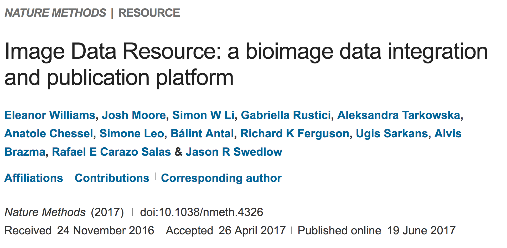

Image Data Resource
Welcome to the Image Data Resource (IDR). This online, public data repository seeks to store, integrate and serve image datasets from published scientific studies.
Take a look at the data
The IDR makes datasets that have never previously been accessible publicly available, allowing the community to search, view, mine and even process and analyze large, complex, multidimensional life sciences image data. Sharing data promotes the validation of experimental methods and scientific conclusions, the comparison with new data obtained by the global scientific community, and enables data reuse by developers of new analysis and processing tools.
You can browse the IDR without any special knowledge, but if you would like to see how the IDR can be used to obtain new biological insights from existing datasets, or a more in-depth explanation of how the IDR is setup, please see the Nature Methods paper.
IDR datasets are annotated with author-supplied metadata (e.g., annotations, defined regions, feature vectors and ontological annotations) that are all stored and available for browsing. All metadata are also available through the OMERO API.
If you are interested in submitting data to the IDR, see our submission guidelines.
Datasets in human cells, Drosophila, and fungi are included. The full Mitocheck dataset and a comprehensive chemical screen in human cells are included. Imaging data from Tara Oceans, a global survey of plankton and other marine organisms is also included.
Wherever possible, functional annotations (e.g., “increased peripheral actin") and experimental components have been converted to defined terms in the EFO, CMPO or other ontologies, always in collaboration with the data submitters (see example). >80% of the functional annotations have links to defined, published controlled vocabularies.